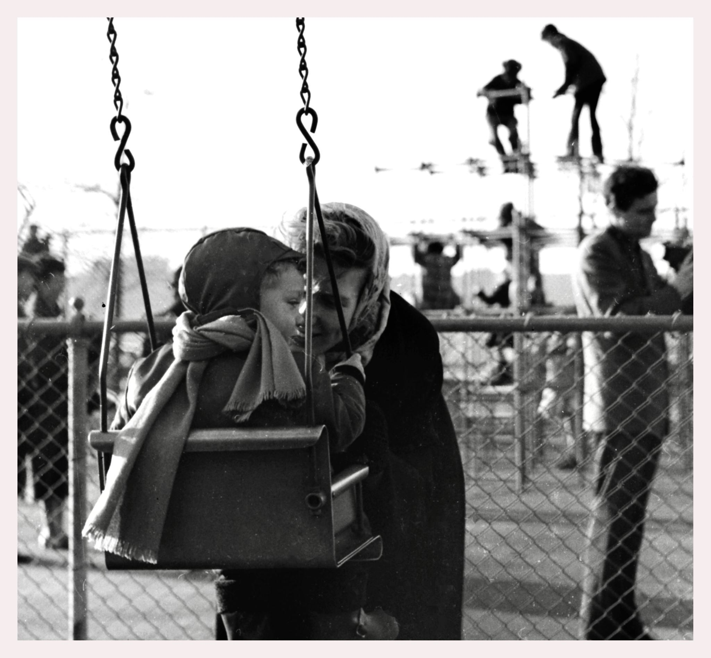
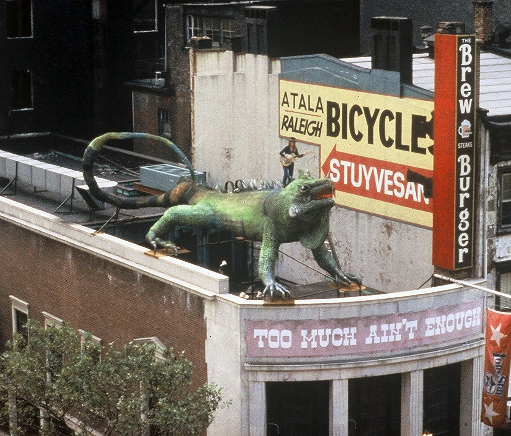
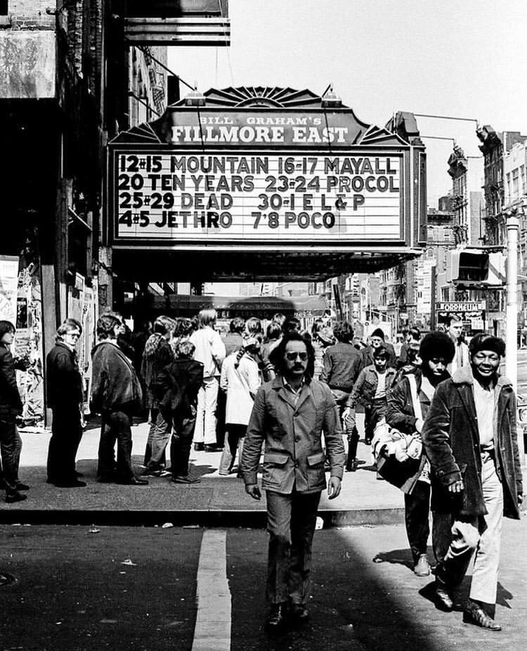
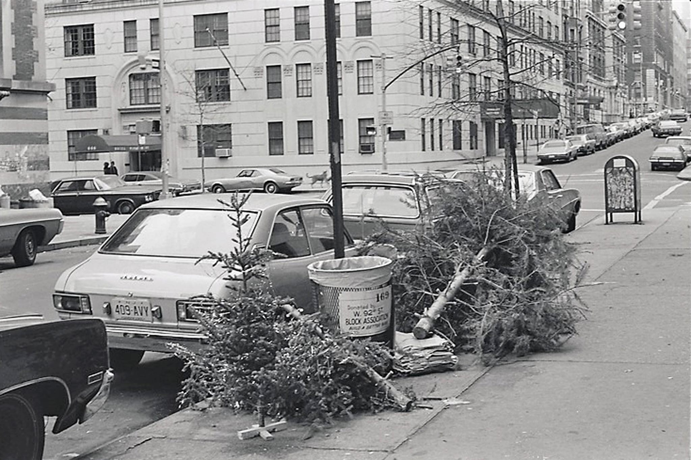

Times Square in the 70s
Times Square in the 70s

These swings (I remember them in Riverside Park) – hard metal with sharp edges… Accidents waiting to happen.

So 80s!
Broadway and 26th, 1978


1: Rattlesnake Annie performing (late 70s) on top of Bob Wade’s iguana sculpture on the roof of the Lone Star Cafe (5th Ave and 13th St).
2. The sculpture in 1997 in a new location.

Fillmore East, 1971. A lot of great acts!

After Christmas on 92nd Street and West End, looking East

High Society’s highest rating ever!!!

Sad Subway Lady wishes you all a Happy New Year!